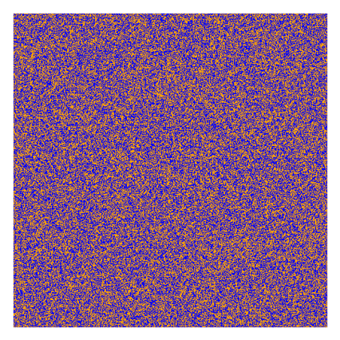

Instructions
{% if page == 1 %}
Imagine you are a geologist sorting samples of a fictional mineral, Vibranium,
into blue and orange sub-types
Unfortunately, the two sub-types are difficult to tell apart, since they both are speckled blue and orange.
{#
The only difference visually is that one sub-type tends to be#}
{# a little more orange, and the other tends to be a little more blue.
#}
For simplicity, we will call them VBN-ORANGE and VBN-BLUE.
However, there is a lot of overlap in their appearance,
and it is almost impossible to sort them with 100% accuracy by eye.
{% endif %}
{% if page == 2 %}
During the experiment you will be shown images of Vibranium's particles
(as can be seen in the example below).
Your task is to determine whether each image is a VBN-ORANGE or a VBN-BLUE.
You should base your decision on the ratio between the amount of blue and the orange colors
in the image.
Higher blue ratio is more likely to be VBN-BLUE
and higher orange ratio is more likely to be VBN-ORANGE.
Correct classification will earn you {{ v_tp }} points and wrong classification
will cost you {{ v_fn }} points.
You will start with a budget of {{ budget }} points.
After each decision, you will be notified if you were wrong or correct
and your points will be updated accordingly.

{% endif %}
{# # End of block instructions#}
{% if page == 3 %}
{% if block == 1 and condition == 'binary' %}
Now, you can use an automatic support system,
which tests the chemical properties of the sample,
and then assessing whether the sample is more likely to be
VBN-ORANGE or VBN-BLUE.
When you click the "Use the support system", a binary judgement of the support system about the Vibranium
(either VBN-ORANGE or VBN-BLUE), will be displayed.
However, just like a human judge, the support system can sometimes make mistakes.
{% if sensitivity == 'low' %}
Testing has shown that, on average, the system is correct 65% of the time and incorrect 16% of the time.
{% endif %}
{% if sensitivity == 'high' %}
Testing has shown that, on average, the system is correct 87% of the time and incorrect 16% of the time.
{% endif %}
You can decide to use the support system to help you make your decisions,
at a cost of {{ system_cost }} points for each use.
Be aware, that you are free to disagree with the decision made by the system,
and use it to your own best judgement.
{% endif %}
{% if block == 1 and condition == 'likelihood' %}
Now, you can use an automatic support system,
which tests the chemical properties of the sample,
and provides you independent information about the Vibranium
VBN-ORANGE or VBN-BLUE.
When you click the "Use the support system", an additional images of Vibranium's particles
However, just like a human judge, the support system can sometimes make mistakes.
{% if sensitivity == 'low' %}
Testing has shown that, on average, the system is correct 65% of the time and incorrect 16% of the time.
{% endif %}
{% if sensitivity == 'high' %}
Testing has shown that, on average, the system is correct 87% of the time and incorrect 16% of the time.
{% endif %}
You can decide to use the support system to help you make your decisions,
at a cost of {{ system_cost }} points for each use.
Be aware, that you are free to disagree with the decision made by the system,
and use it to your own best judgement.
{% endif %}
{# end of block 1 - start of block 2 - PD is possible #}
{% if block == 1 and condition == 'likelihood_integrated' %}
Now, you can use an automatic support system,
which tests the images of Vibranium you saw and the chemical properties of the sample,
combining those two sources of information into new pictures of the Vibranium particles.
When you click the "Use the support system", the image will be replaced by a new image,
which now includes the additional information from the support system.
However, just like a human judge, the support system can sometimes make mistakes.
{% if sensitivity == 'low' %}
Testing has shown that, on average, the system is correct 65% of the time and incorrect 35% of the time.
{% endif %}
{% if sensitivity == 'high' %}
Testing has shown that, on average, the system is correct 87% of the time and incorrect 13% of the time.
{% endif %}
You can decide to use the support system to help you make your decisions,
at a cost of {{ system_cost }} points for each use.
Be aware, that you are free to disagree with the decision made by the system,
and use it to your own best judgement.
{% endif %}
{# end of block 2 - start of block 3 - PD is not possible in order 1 only #}
{% if block == 2 and order == 1 %}
In the next 50 trials, you will not have the opportunity to use additional information.
{% endif %}
{# end of block 2 - start of block 3 - PD is possible in order 2 #}
{% if block == 2 and order == 2 %}
You have the opportunity to use the support system again.
Remember, the aid will cost you {{ system_cost }} points for each use.
{% endif %}
{# end of block 3 - start of block 4 - PD is not possible in order 2 #}
{% if block == 3 and order == 2 %}
In the next 50 trials, you will not have the opportunity to use additional information.
{% endif %}
{# end of block 3 - start of block 4 - PD is possible in order 1 #}
{% if block == 3 and order == 1 %}
You have the opportunity to use the support system again.
Remember, the aid will cost you {{ system_cost }} points for each use.
{% endif %}
{# Display the general instructions #}
Your task is similar:
you need to determine whether the image represents a VBN-ORANGE or a VBN-BLUE.
You should base your decision on the ratio between the amount of blue and the orange colors
in the image.
{# {% if block == 1 %}#}
{#
Higher blue ratio is more likely to be VBN-BLUE#}
{# and higher orange ratio is more likely to be VBN-ORANGE.
#}
{##}
{#
Correct classification will earn you {{ v_tp }} points and wrong classification#}
{# will cost you {{ v_fn }} points.
#}
{##}
{#
You will start with a budget of {{ budget }} points.
#}
{##}
{#
After each decision, you will be notified if you were wrong or correct#}
{# and your points will be updated accordingly.
#}
{# {% endif %}#}
{% endif %}